Sedmi dan, Jaipur: Kobra, slon, Aladin i Jasmin
Ovaj dan je bio poseban. Jaipur je čarolija. Kao da smo ušli u crtani “Aladin i čarobna lampa”. Čak smo videli Aladina i Jasmin uživo (verovatno mladenci koji su došli da se slikaju, u izuzetno bogatim i nakićenim nošnjama, ona puštene duge crne kose, prelepi).
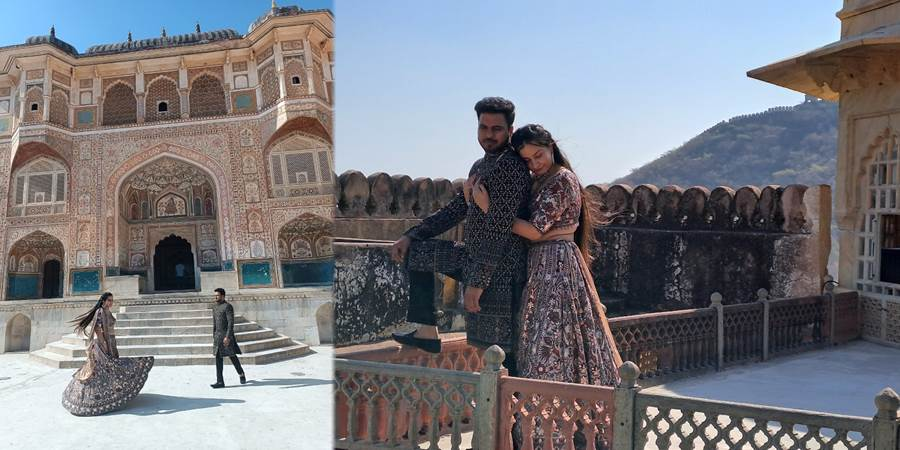A ovo su Aladin i Jasmin kada su bili mali
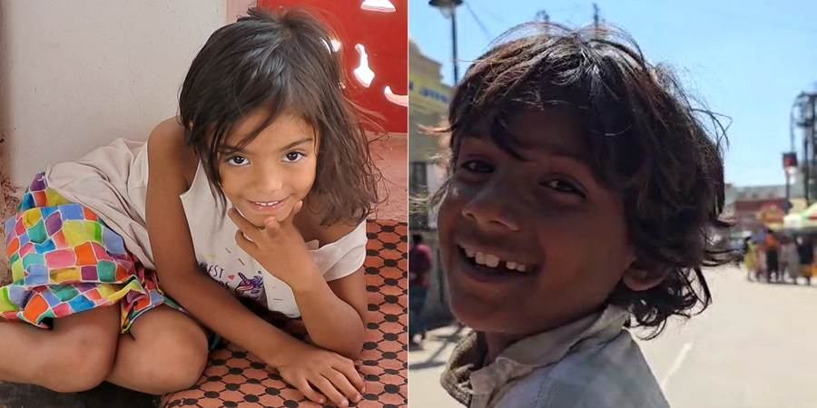Al od početka. Reče vodič Nikola: idemo do Agra Forta. Tvrđava. Pa dobro. Nema tu nekog prevelikog uzbuđenja za tvrđavu. A šta nas je dočekalo...
Za početak, pored nekog kanala, iza koga je tvrđava od žutog kamena, sedi fakir sa turbanom, svira u frulicu a kobra mu pleše. Pokazuje rukom da sednemo pored njega. Naravno da sam ja prva sela sva srećna. Zbogom pameti. “Baci kobre da se igramo!” pevam ja u sebi krilaticu, modernu ovih dana u mojoj Srbiji. Međutim nisam baš toliko hrabra kao Elena koja je kasnije uzela korpu sa sve kobrom u ruke.
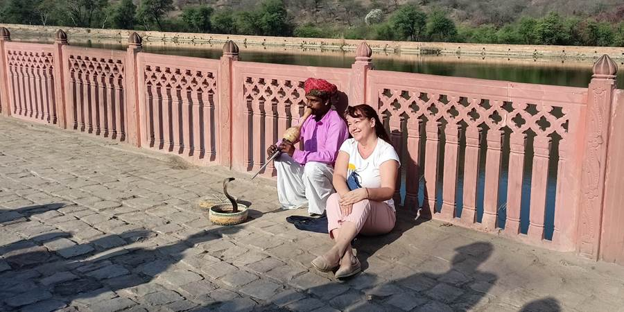Pokazuje mi fakir da mu dam pare, ja imala sitno 150 rupija i to mu dala. Zatim foto sešn ispred tvrđave kad prilazi mi jedan Indijac. Kaže slikanje sa kobrom je 2000 rupija. O, da. Upozorio nas je Nikola da ne sedamo sa kobrom jer će posle pokušati da nas oderu. U momentu kad sam videla kobru sam to zaboravila i kao hipnotisana sela pored nje. Međutim ja sam vrlo samouvereno rekla da ja para nemam, i ako je hteo pare da je morao prvo da mi kaže cenu. Toliko sam to odlučno i ubedljivo rekla da me ostavio na miru. Verovatno je pomoglo i to što sam bila u velikoj grupi.
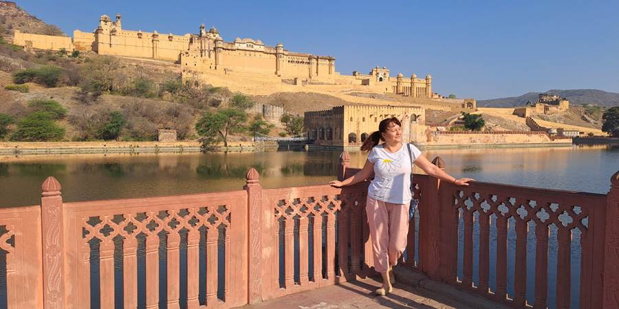Sedamo u džipove i uzbrdo ka tvrđavi. Usput su prodavnice i nude nam svašta dok se vozimo. Mislim se, Bože, čemu to, i ovako im neće stati džip.
Vesna upita za neki prekrivač sa slonom za cenu. Ok je cena, al je htela druge boje. Nema problema, reče prodavac. Kako nema problema? Mi odosmo.
Vidimo ga u daljini kako istrčava iz svoje prodavnice sa gomilom prekrivača preko jedne ruke, seda na motor i juri za nama. Gledamo, ne možemo da verujemo i smejemo se. Kad, stigao nas i zakačio se za džip.
Posle nas dočekao i gore kod tvrđave iako smo ga odbile. Vesna je pregledala prekrivače i rekla da joj ni jedan ne odgovara.
Meni je pogled pao na neke futrole sa šarenim slonovima na šljokice. Bili su slatki i prejeftini za poklone ali sumnjam da bi se ikome svideli. Momenat nedoumice kad uhvate u pogledu, gotov si.
Ovaj prodavac mi se zalepio i nudi, nudi, ne odvaja se od mene. Neću. Ma, neću. Gledam ga u oči i kažem: “Molim te prestani. Prestani!” Kao da ništa nisam rekla. Jedva sam ga se otresla, baš je dugo išao za mnom.
Naš guru za cenkanje Maja, uopšte nema problema sa tim. Pita, cenjka se, idu za njom, ćaska ona, lepo joj.
Ovo je jedino mesto gde je bilo puno turista i puno prodavaca koji su baš bili napadni. Neko to ume da nosi lagano, kao Maja, a ja sam našla svoje rešenje. Kako vidim krajičkom oka da mi prilaze, cimnem glavom u drugu stranu, prilično napadno i gledam u vis, ne osvrćem se, ne gledam robu, ne progovaram. Ostave me za čas.
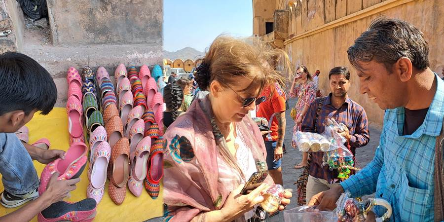Uđosmo ti mi najzad u tvrđavu, a tamo ne znaš gde da gledaš od lepote.
Prvo smo naišli na slonove. Ja sam im prišla suviše blizu. Dotrčala je čuvarka i pitala me: “Are you crazy?”, a slon me samo pozdravljao dizanjem surle dok je paradno prolazio sa tragovima boje po sebi od Holija.
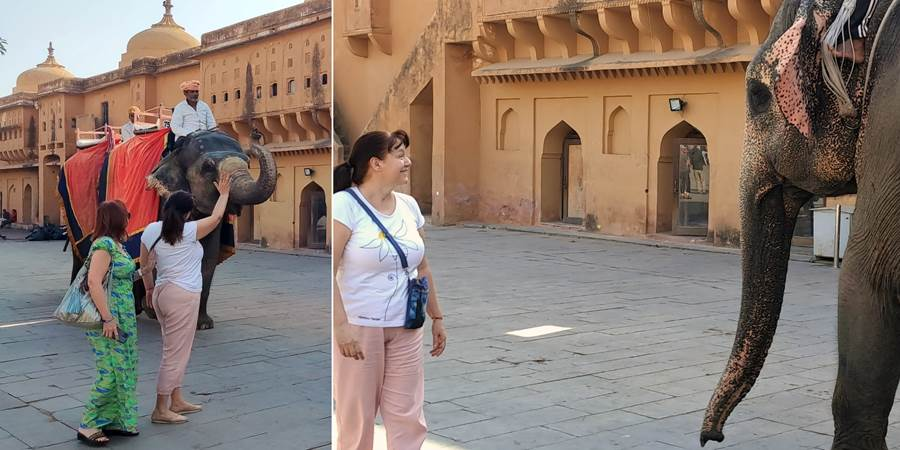Ide se iz prostorije u prostoriju. U jednoj neverovatni, kitnjasti reljefi po plafonu, druga oslikana cvećem, treća u prekrasnim lukovima jedno iza drugog, sledeća u ogledalcima, poludragom kamenju, sedefu.
Pa bašta sa rastinjem u neobičnim geometrijskim oblicima.
Sa tvrđave Agra Fort vidi se preko tvrđava sa zidom koji je treći po veličini na svetu (da je prvi kineski znamo, a koji je drugi ne znam). Vidi se i bašta na vodi.
Fantazija. Sve lepše od lepšeg. Oduševila sam se. Ko bi rekao za jednu tvrđavu.
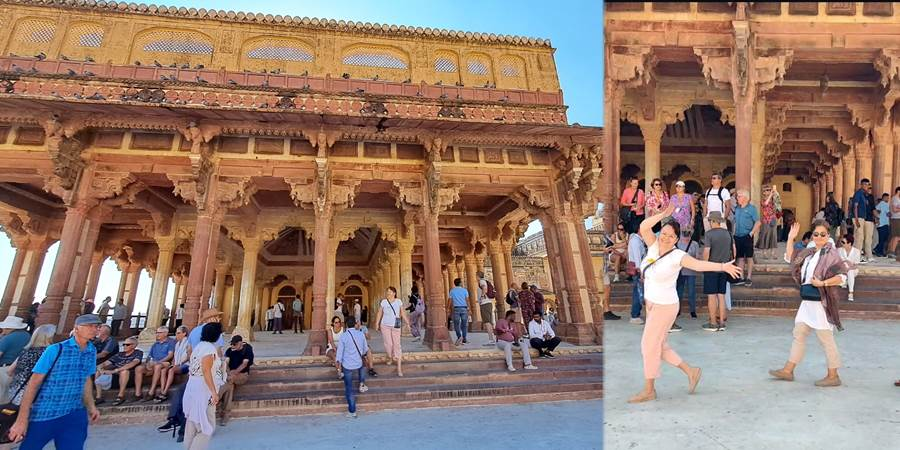 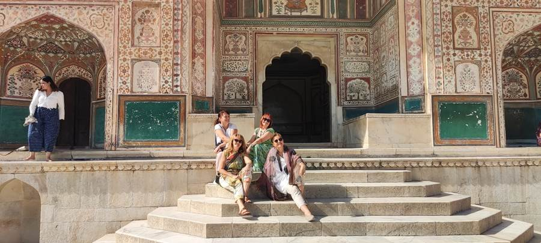 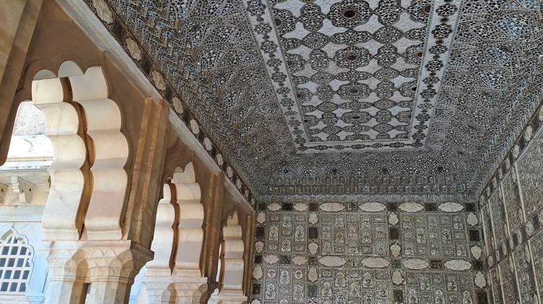 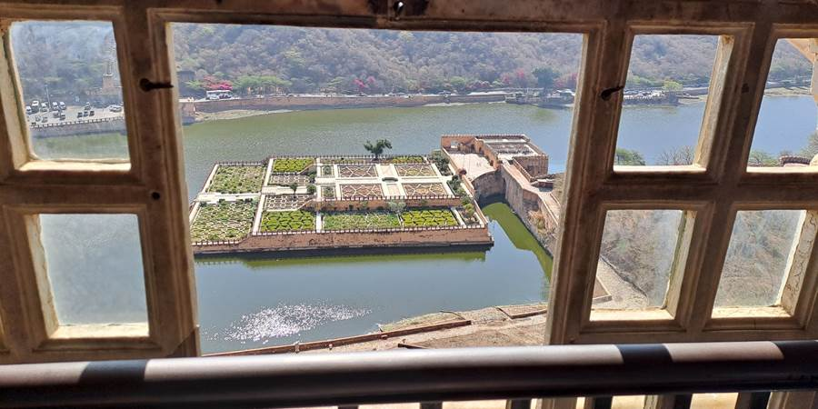 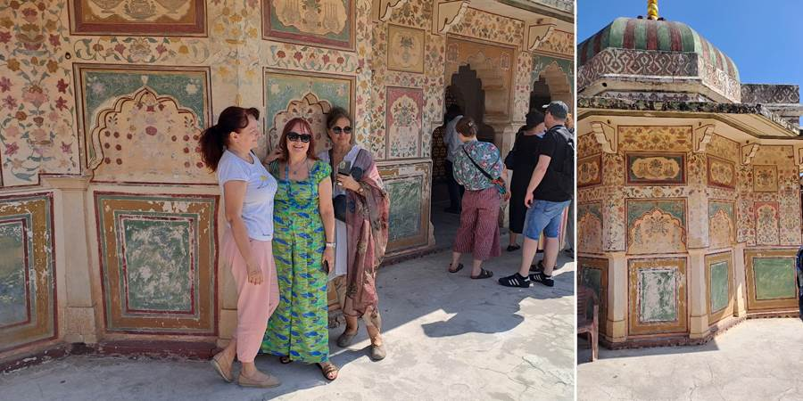 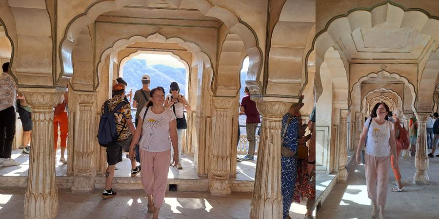Na svakoj znamenitosti imamo drugog vodiča. Ovde smo imali jednog baš slatkog Indijca koji se zaljubiška u našu Jovanu. Čak joj je u 0:00 poželeo srećan rođendan. Poranio je jedan dan al mu nismo rekli.
Posetili smo palatu na vodi. Nismo mogli ići do nje jer se renovira.
Išli smo u Jantar Mantar. To su neki neobični oblici koji su im služili za računanje vremena, odeđivanje položaja zvezda. Kada sam pitala kako, reče vodič, vidiš ove linije, tako. I ja svašta pitam. Ima i svaki horoskopski znak svoj deo. Sve u svemu, jako davno su svašta znali. Oduševićete se kad vidite, rekoše u planu putovanja.
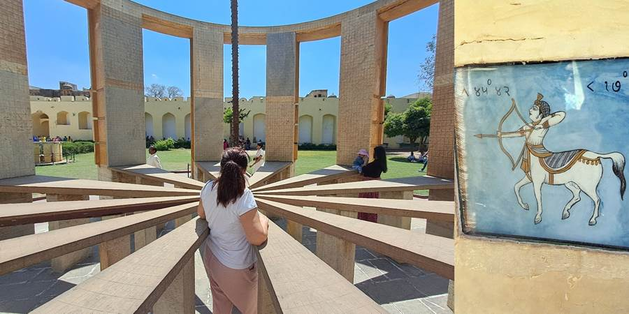 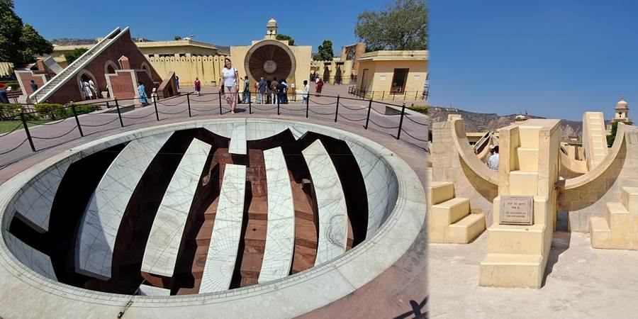Posle smo išli da vidimo gradsku kuću koja je takođe vrlo lepa.
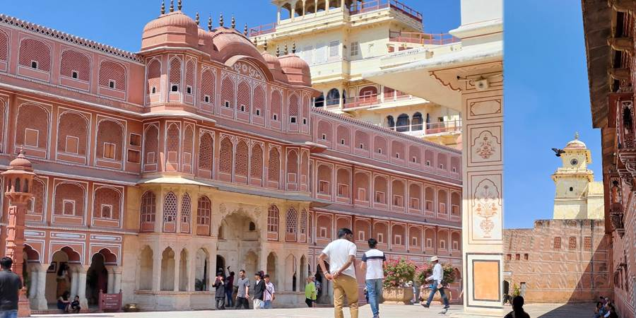 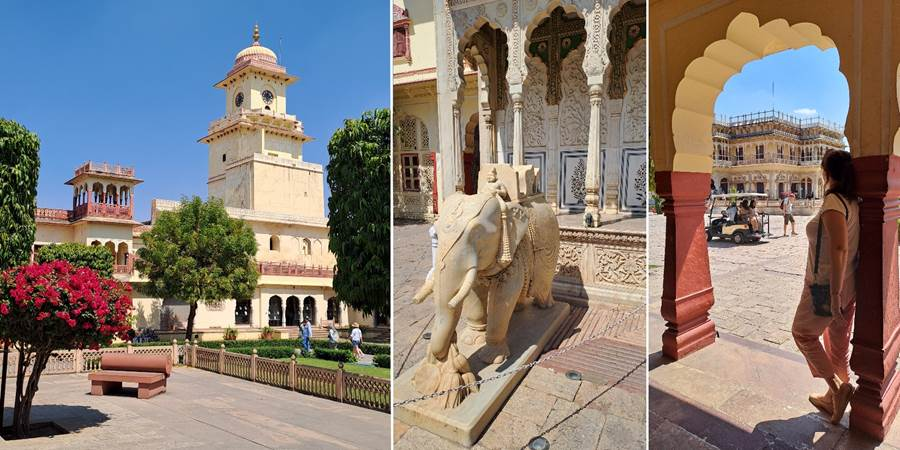Poznat deo palate je unutrašnje dvorište Pitam Niwas Chowk sa četvoro bogato ukrašenih vrata. Simbolizuju četiri godišnja doba. Meni su najlepša ona sa paunovima gde oni nisu samo oslikani nego i izvajani. Ta vrata predstavljaju leto.
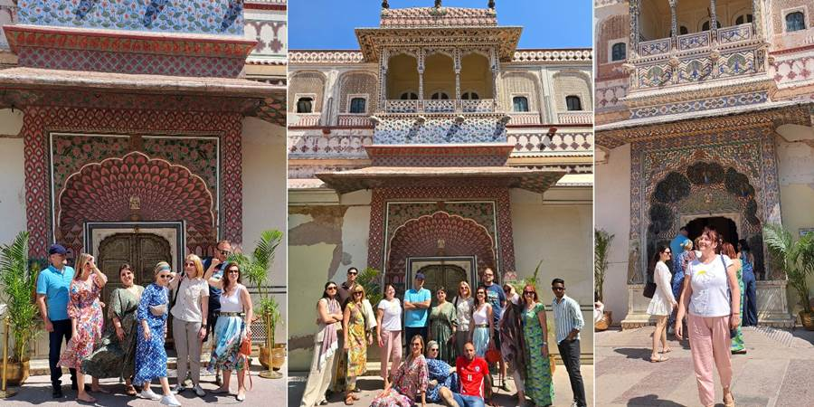Čuvari su obučeni u belo sa crvenim turbanima. Druželjubivi i raspoloženi za slikanje.
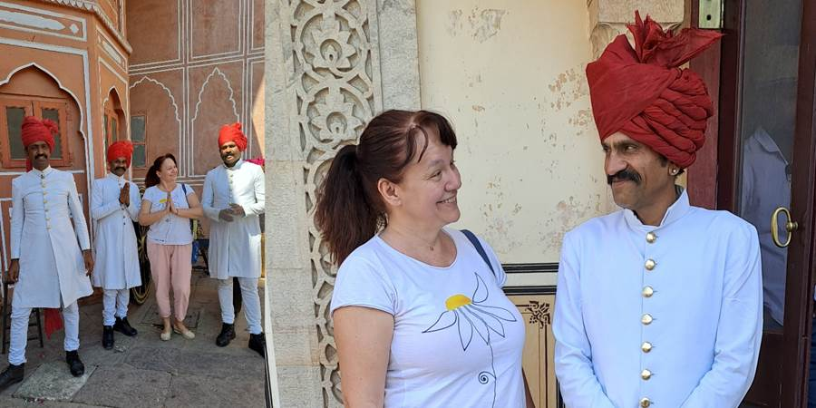
Ne propustite sledeću avanturu!
Kad Sandra krene u novi kraj sveta, vaš inbox prvi sazna. Prijavite se i stižu vam sve nove priče mejlom.